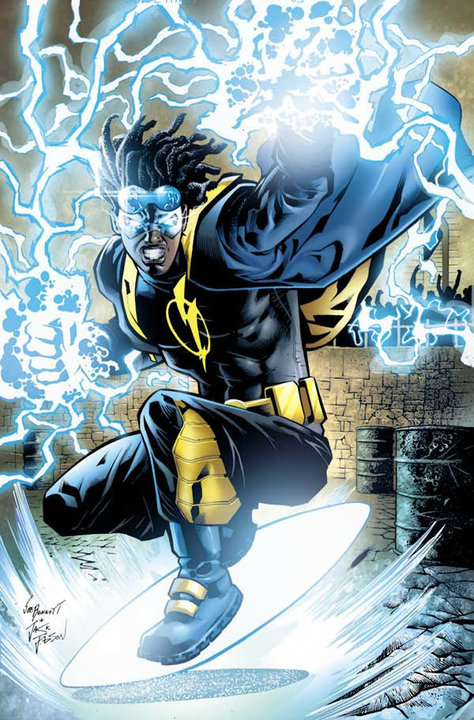
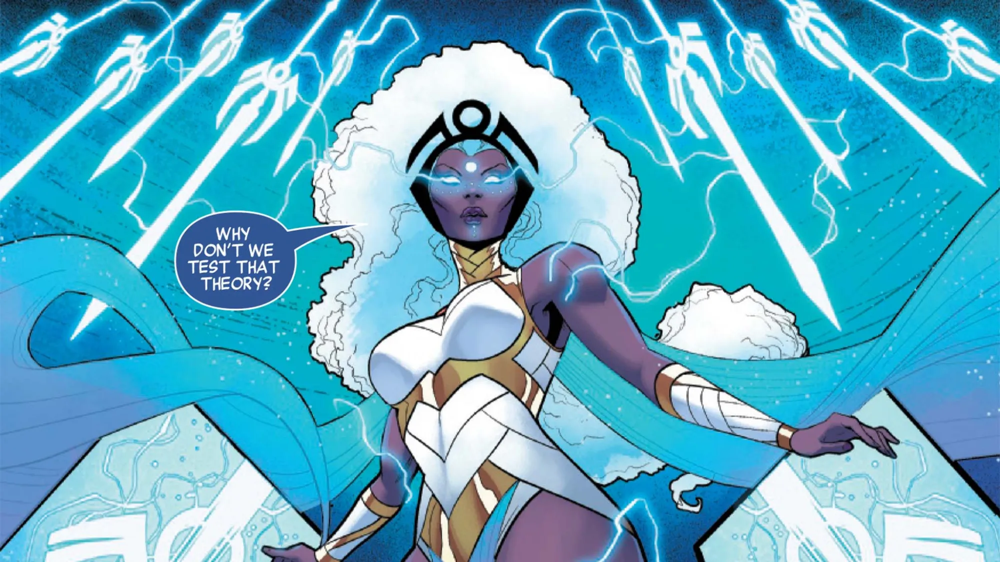

This site highlights underrated Black characters in comics and media. One cool fact: Static Shock the animated series had higher ratings than Teen Titans, Ben 10, and Justice League. However, the hero never received the same merchandising push as some other superhero properties.
45 Important Black Superheroes in Comics

Spawn is a supernatural antihero created by Todd McFarlane. The character became one of the most successful independent comic book heroes and helped launch Image Comics in the 1990s.

Static Shock is a teenage superhero who gained electrical powers and fights crime while dealing with high school, racism, and other life challenges. The animated series became a fan favorite and introduced many viewers to the character.

Storm is an Omega-level mutant in the X-Men universe. She can control weather patterns across the planet and has served as both a leader of the X-Men and a queen of Wakanda. Prior to meeting Prof. Xavier, she was hailed as a goddess amongst her people before finding out she's mutant.